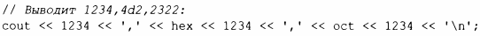
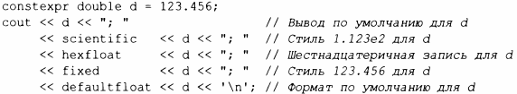
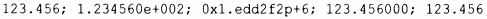
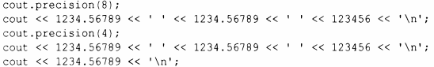
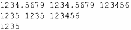

⇐10.5 Ввод-вывод пользовательских типов 10.7 Файловые потоки⇒
Библиотека iostream предоставляет большой набор операций для управления форматом ввода и вывода. Простейшие элементы управления форматированием называются манипуляторами и описаны в заголовочных файлах <ios>, <istream>, <ostream> и <iomanip> (для манипуляторов, которые принимают аргументы). Например, мы можем выводить целые числа в виде десятичных (по умолчанию), восьмеричных или шестнадцатеричных чисел:
Можно явно указать формат вывода чисел с плавающей точкой:
Этот код дает следующий вывод:
Точность - это целое число, определяющее количество цифр, используемых для отображения числа с плавающей точкой.
Значения с плавающей точкой округляются, а не просто усекаются; функция precision () не влияет на целочисленный вывод. Например:
Это дает следующий вывод:
Эти манипуляторы с плавающей точкой являются "клейкими", т.е. их влияние сохраняется и для последующих операций с плавающей точкой.